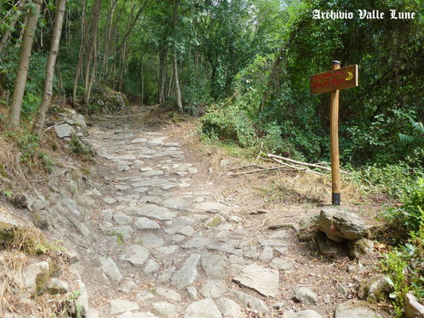

L’acciottolato
La strada che percorriamo ha un fondo acciottolato. Non è facile stabilire esattamente quando fu sistemato perché questo modo di costruire, semplice e tradizionale, è ancora utilizzato e perché, sicuramente, nel corso del tempo il fondo stradale è stato restaurato più volte, anche di recente.
Possiamo fare, tuttavia, delle ipotesi basandoci su alcuni elementi caratterizzanti: le dimensioni e l’itinerario. Le mulattiere usate nel Medioevo, ad esempio, erano larghe circa un metro ed, essendo in genere percorse a piedi o con i muli, potevano avere anche pendenze considerevoli.
Per quanto riguarda invece l’itinerario, il nostro percorso, che univa San Marcello Pistoiese al Castel di Mura e ai passi dell’Appennino, ebbe notevole importanza durante tutto il Medioevo fino all’apertura della Strada Regia Modenese nel XVIII secolo.